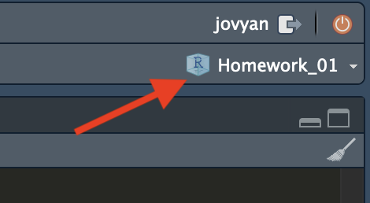

6 プロジェクト管理
6.1 「プロジェクト」のすゝめ
Rを使ったプログラミングやデータ分析を進めていくと、自分が書いたRスクリプトや作成した図表だけでなく、 Rが自動的に生成するファイルもどんどん溜まる。そう遠くない将来、ドライブ内のファイル数が数万に達しても不思議ではない。効率よくプログラミングを行うために、ファイルの管理方法を明確にしておいたほうが良い。そのためには、フォルダの階層化を利用してファイルを管理することが必要である。
しかし、フォルダによる階層化を導入すればファイルの管理が楽になるかというと、必ずしもそうとは限らない。かえって不便になる部分もある。前の節で見たとおり、フォルダを階層化すると、絶対パスが長く（複雑に）なる。ファイルを階層化によって整理したとしても、ファイルを利用するたびに長い絶対パスの入力が必要なら、ファイル管理の効率が上がったとは言えないだろう。
Rを使う場合にファイル管理の効率化を助けてくれるのが、RStudio の「プロジェクト」機能である。
6.2 プロジェクトの作り方
Rの既定（デフォルト）の作業フォルダはホームフォルダある。分析に使うデータが、ホームフォルダの中の Documents フォルダの中の R フォルダの中の Analysis1 フォルダ内の Data フォルダにある data.csv だとしたら、このファイルにアクセスするためには、"Documents/R/Analysis1/Data/data.csv"と入力する必要がある1 \(^,\) 2。新たに作った図を “histogram.pdf” という名前でホームフォルダの中の Documents フォルダの中の R フォルダの中の Analysis1 フォルダ内の Figures というフォルダに保存するためには、"Documents/R/Analysis1/Figures/historam.pdf"と入力する必要がある。どちらもかなり面倒で、効率が悪い。
しかし、作業フォルダが、~/Documents/R/Analysis1/ だとすれば、相対パスにより、"Data/data.csv" や"Figures/historam.pdf" だけで済む。よって、作業フォルダを明示的に指定すればいいわけだが、作業フォルダを毎回指定するのも面倒だ。
そこで利用できるのが、RStudio のプロジェクト機能である。 プロジェクトとは、特定のフォルダを作業フォルダに設定し、すべての作業をそのフォルダと下位フォルダのみに限定してくれる機能である3。プロジェクト機能さえ使えば、ユーザが意識しなくても、ユーザが書いたコード、保存したデータ、作成した図などが作業フォルダ内に集約され、管理が楽になる。
では、ここからプロジェクトの作り方を説明しよう。
まずはRStudio を起動する。
RStudio が起動したら、“File” から “New Project” を選択する。

- 下の画面が表示されたら、 “New Directory” を選択する。ただし、既存のフォルダを利用したい場合は、 “Existing Directory” を選ぶ。

- 下の画面が表示されたら、“New Project” を選択する。
- 前の手順で “Existing Directory” を選択した場合、この画面は表示されない。

- 下の画面が表示されたら、“Directory name:” にプロジェクト名を入力する。これがフォルダ名になるので、半角英数字のみの 名前を付ける。ここでは第4章のコードということで、“Ch04” にした。統計学の授業用プロジェクトなら “statistics”、計量政治学の授業なら “quant_methods_ps” などの名前を付ければ良いだろう。英語が嫌なら “tokeigaku” のようにすれば良い。また、“Create project as subdirectory of:” では、プロジェクトのフォルダをどのフォルダの中に設置するかを指定する。 “Browse…” をクリックし、親フォルダを選ぶ。ここでは
~/Dropbox/RStudyにプロジェクトのフォルダを入れることにする。ここまでできたら、“Create Project” をクリックする。
- 手順3で “Existing Directory” を選んだ場合、プロジェクトのフォルダとして使う既存フォルダを選択する画面が表示される。

- 以上の手順でプロジェクトができる。RStudio 右上に、プロジェクト名が表示されているはずだ。 また、Console に
getwd()と入力すると、プロジェクトまでの絶対パスが表示される。
念のため、Finder（Macの場合）やエクスプローラー （Windows の場合）で、指定した場所にプロジェクトのフォルダ（上の例では Ch04）が生成されていることを確認しよう。 プロジェクトフォルダを開いてみると、Ch04.Rproj というファイルが生成されていることがわかる（ 図 6.5 ）。

6.3 プロジェクトの開き方
RStudioを終了すると開かれていたプロジェクトも閉じられ、もう一度RStudioを起動するとプロジェクト無しの状態へ戻る4。これはプロジェクトフォルダーがなくなったわけではなく、もう一度開けば良い。作成したプロジェクトを開く（=再開する）方法は、（1）.Rprojファイルを立ち上げる方法と、（2）RStudio内で開く方法がある。
たとえば、先ほど作成したCh04プロジェクトを開くには、 図 6.5 のCh04.Rproj ファイルをダブルクリックすれば良い。RStudioが起動していない場合でも、指定のプロジェクトを開いた状態でRStudioが起ち上がる。
すでにRStudioを開いた状態であれば、わざわざFinder/エクスプローラーを開く必要はなく、RStudio内でプロジェクトを開くこともできる。RStudioメニューのFile > Open Project…（ 図 6.6 ）を選択すると新しいウィンドウが表示されるが、ここで開きたいプロジェクトの.Rprojファイルを選択すれば良い。
このやり方だと、プロジェクトフォルダーを探す手間が必要だからやや面倒である。しかし、よく使うプロジェクト（=最近使ったことのあるプロジェクト）なら簡単に開くこともできる。 図 6.7 のようにFile > Recent Projectsを選択すると最近使用したプロジェクトのリストが表示され、それを選択するだけで当該プロジェクトが開かれるようになる。
もう一つの方法はRStudioの右上にあるプロジェクトボタンを使うことだ（ 図 6.8 ）。ここでOpen Project…はFile > Open Project…と同じ機能であり、下の方には最近使ったプロジェクトの一覧が表示されるのでかなり便利だ。
以上の方法はすでにプロジェクトを開いている状態で、別プロジェクトへ切り替えたい場合でも使える。現在作業中のプロジェクトは置いたまま、新しいRStuioで開きたい場合は、「Open Project in New Session…」を選択すれば良い。
6.4 プロジェクトの確認
RStudio 右上の表示が “Project: (None)” となっているとき（ 図 6.9 (a) ）は、プロジェクトが開かれていないことを意味する。一方、プロジェクトが開かれている場合は当該箇所にプロジェクト名が表示される（ 図 6.9 (b) ）。RStudio を使う場合には、必ず右上の表示を見て、プロジェクトが開かれていることを確認しよう。プロジェクトが開かれていない場合には、既存のプロジェクトを開くか、新たばプロジェクトを作ろう。むろん、簡単な計算や電卓用途、計算・分析結果を残す必要がない場合は無理してプロジェクト機能を使う必要はない。
